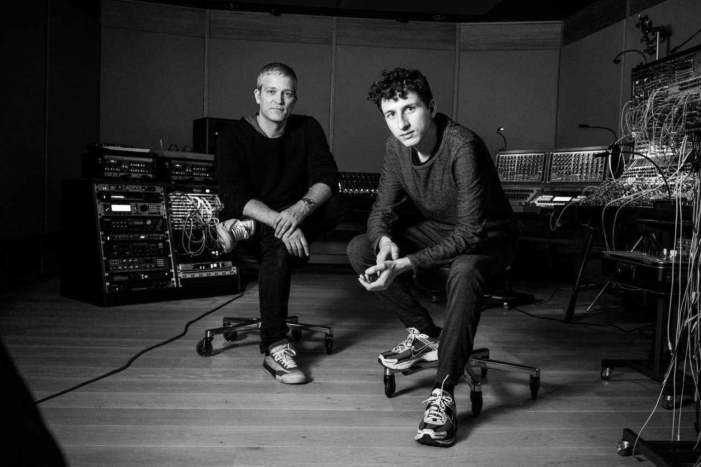

28.09.2022
Metropolis представя Sonic Voyager: BEN KLOCK
Има ли нещо, което още не е казано за Бен Клок? „Постоянното присъствие“ в топ 10 Resident Advisor – най-авторитетната класация за DJ в света, резидент на най-известния техно клуб в света Berghain, носител на титлата най-добър Essential mix за 2015 за предаването на Пит Тонг по Би Би Си радио Едно. DJ, за когото маратонските сетове от по 2 часа на днешните „звезди“ са направо смешни и може би един от най-безкомпромисните техно артисти, които историята познава. Артист, чийто календар е запълнен за година напред. Продуцент, на когото дори Depeche Mode могат да поверят своя песен за ремикс.
Но това, което не може да се опише с думи е атмосферата, която създава, пътуването, на което изпраща публиката когато застава на пулта. И вместо да се опитваме да го направим, просто ще ви поканим на 8 октомври в най-голямото хале на Металснаб, където Метрополис ще открие есенния сезон.
Metropolis presents Sonic Voyager 2022 с Ben Klock, Ben Sims, Fadi Mohem и Metropolis DJs ще се проведе на 08.10.2022 в двора на МеталСнаб – София. Начало 22:00 часа. С подкрепата на Национален Фонд Култура.